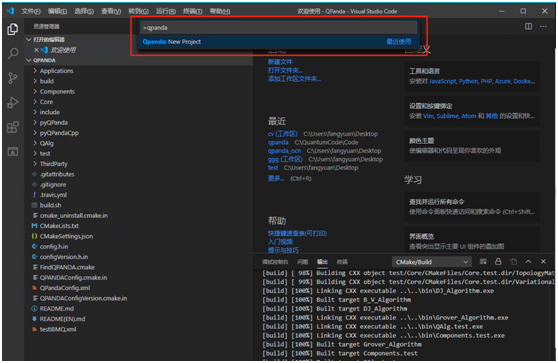
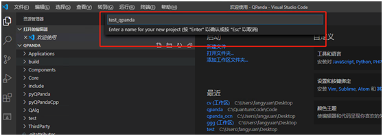
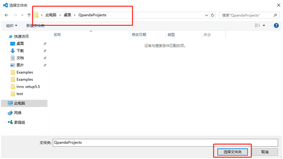
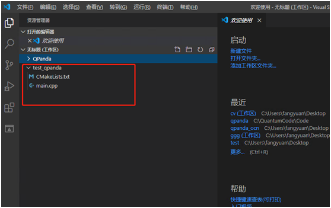
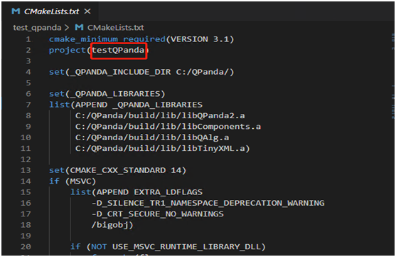
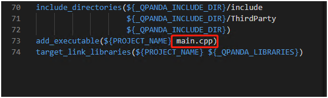

四、新建项目并运行¶
4.1、新建QPanda项目¶
4.1.1、新建项目¶
启动命令行命令（ctrl+shift+p）并搜索命令QPanda:New Project
4.1.2、编辑项目名称¶
新建一个项目名（如test_qpanda）
4.1.3、选择项目路径¶
选择好项目路径就会把项目加入到vscode工作区（项目新建完成后会生成一个QPanda项目示例main.cpp和CMakeLists.txt）
4.1.5、根据示例自己编程¶
打开CMakeLists在第2行修改项目名，项目名务必唯一； 在第73行修改运行的文件名称； 修改完成之后编译运行即可
cmakeLists 修改项目名称
cmakeLists 修改文件名称